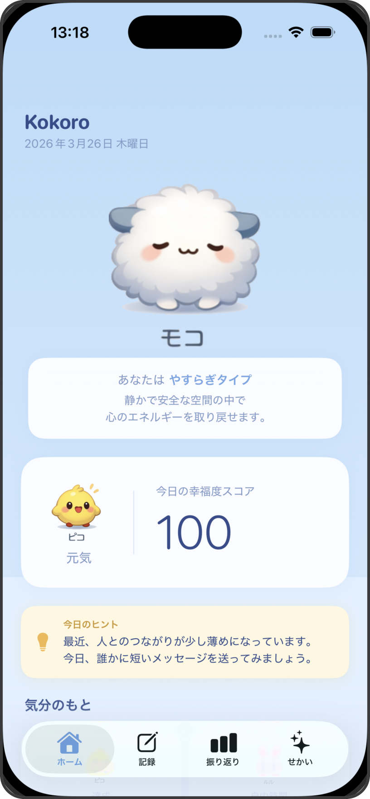
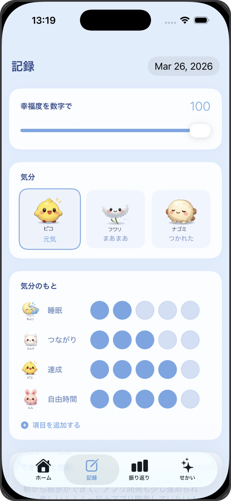
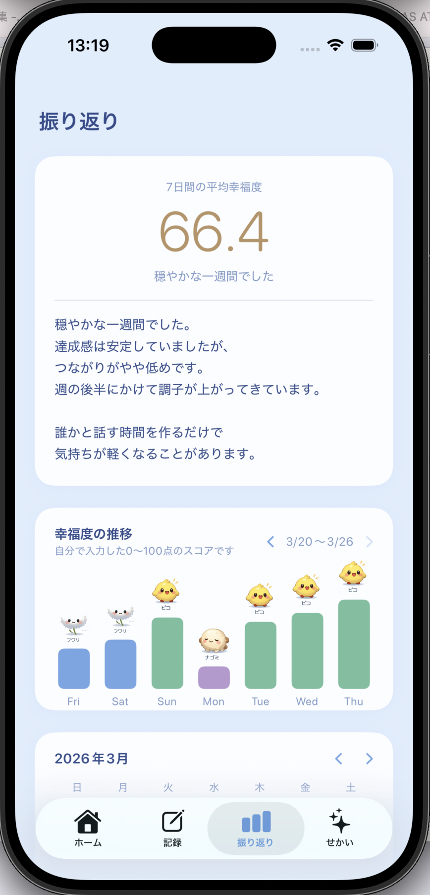
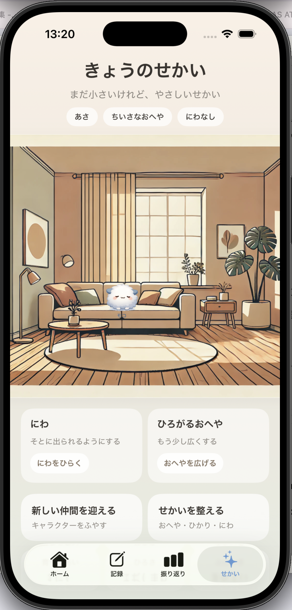
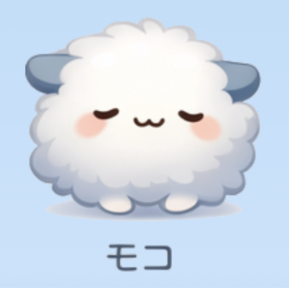
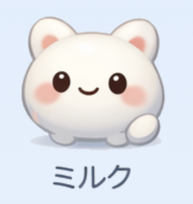
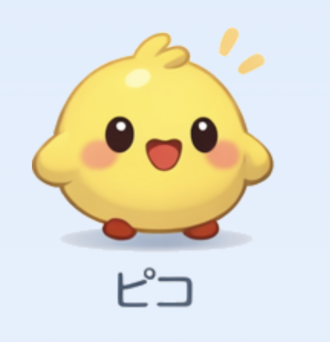
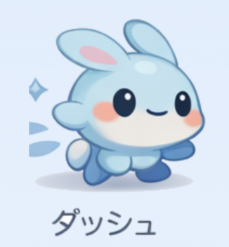

こころを、科学する The Science of the Heart
— Kokoro, 日本発の幸福度トラッキングアプリ — Kokoro, Japan's happiness intelligence app
外の世界がどう変わっても、こころの解釈は変えられる。Kokoroは毎日のこころの記録を通して、あなた自身の幸せのパターンを見つけ、育てます。 No matter what the world throws at you, how your heart interprets it is yours to choose. Kokoro helps you find — and grow — your own pattern of happiness, one day at a time.

4
あなたのこころ
タイプを診断Your Kokoro type
revealed
1
Mokoが
そばにいるMoko is
always here
∞
毎日の記録から
成長が生まれるGrowth through
daily practice
— Viktor Frankl / 稲盛和夫が示した、こころの真実 — The truth that Viktor Frankl & Kazuo Inamori showed us
ヴィクトール・フランクルは強制収容所という極限状態の中で、人間の最後の自由は「状況への態度を選ぶ力」だと気づきました。どんな環境でも、こころの解釈だけは自分のものだと。Viktor Frankl discovered in the extremes of a concentration camp that the last human freedom is the power to choose one's attitude toward any situation. No matter the circumstance, the heart's interpretation remains yours.
稲盛和夫は「人生・仕事の結果＝考え方×熱意×能力」と説きました。そのうち最も重要な「考え方」こそが、こころの向き——幸せを決める変数だと。Kazuo Inamori taught that life's results equal thinking × passion × ability — and that "thinking," your mindset, is the variable that determines happiness.
Kokoroはこの哲学から生まれました。幸せを外に探すのではなく、自分のこころの中に育てるために。Kokoro was born from this philosophy. Not to chase happiness outside — but to cultivate it within.
「どんな環境にあっても、自分の態度だけは自分で選べる」"The last of human freedoms is to choose one's attitude in any given set of circumstances."
「幸せかどうかは、境遇が決めるのではなく、心が決める。」"Whether you are happy is not determined by your circumstances, but by your heart."
ホームHome
ホームホーム
今日のあなたのこころの状態を一目で。幸福度スコア、あなたのこころタイプ、各要素のスコア、そしてAIが提案する今日のアクション。毎日の変化を感じます。See your heart at a glance. Today's happiness score, your Kokoro type, factor analysis, and AI-suggested actions to nurture what matters most.
記録Record
記録記録
毎日の幸福度（0-100）、気分（元気/まあまあ/つかれた）、4つの要素のドット評価、できたこと日記、CBT思考記録。あなたのこころの内側を丁寧に記録します。Daily happiness slider, mood check, factor ratings, accomplishment journal, and CBT thought recording. Capture your inner world with depth and care.

振り返りAnalysis
振り返り振り返り
週間の幸福度グラフ、月間カレンダー、週間の洞察、パターン分析。あなたのこころが何に満たされるのかが、時間とともに見えてきます。Weekly happiness chart, monthly calendar view, weekly insights, and pattern analysis. Discover what truly makes your heart flourish.

せかいWorld
せかいせかい
あなたのこころを表すドラッグ可能なマスコットたちが暮らすバーチャルルーム。庭を育て、キャラクターを集め、あなたの心の風景を自由に作り上げます。Your virtual heart's room. Arrange mascots, grow a garden, and create your own heart's landscape. A living reflection of your inner world.

あなたのこころタイプに応じて、異なるマスコットがあなたの成長をサポートします。やすらぎタイプはモコ、つながりタイプはミルク、好奇心タイプはピコ、チャレンジタイプはダッシュ。それぞれがあなたのそばにいて、毎日のあなたのこころに寄り添います。 Your Kokoro type determines your mascot companion. Moko for Calm, Milk for Connection, Piko for Curiosity, Dash for Growth. Each stays by your side, responding to your heart's rhythm.

モコMoko
やすらぎタイプCalm
静かに寄り添うCalm & Gentle
ミルクMilk
つながりタイプConnection
温かくつながるWarm & Connected
ピコPiko
好奇心タイプCuriosity
楽しく発見するCurious & Playful
ダッシュDash
チャレンジタイプGrowth
力強く成長するBold & Growing「あなたのこころを映すために、
ぼくらはここにいます。
一緒に成長しましょう。」"We're here to reflect your heart.
Let's grow together."
Kokoroは今、App Storeから無料でダウンロードできます。あなたのこころの旅を始めましょう。 Kokoro is live on the App Store. Start your heart's journey today—free to download.
No ads, no heart harvesting. ただあなたのこころだけを育てます。 No ads, no heart harvesting. Just growing what's inside you.